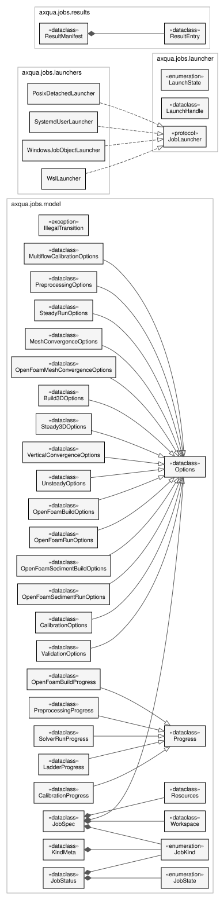

Job system
axqua.jobs gives a simulation a lifetime of its own. A job is a folder on disk that one process creates and another process executes. The modules model, ids and paths use the Python standard library only.


Classes of a job. JobSpec is the description that is submitted, with one class of options per type of job. JobStatus is the state that the running job reports, with one class of progress per type of job. The four launchers fulfill the interface JobLauncher and detach a job on Linux, on Windows and in the Windows Subsystem for Linux.
Job description and storage
The job model: states, kinds, options, progress, and the two records on disk.
Two files describe a job, and the split is the whole point (plan §3):
job.jsonThe immutable submission record. What was asked for, resolved and frozen at submit time - including the entire case configuration, not a reference to it. If the user edits
case-config.ymlafterwards, a running job must not change underneath itself, and a finished job must stay reproducible from its own directory alone. Written once, then made read-only.status.jsonThe mutable state. Written only by the runner, only by atomic replace. Readers never lock; they read the last complete file.
Progress is nested and typed by job kind, not flattened into the top level. Most jobs
are not optimizations: a steady run reports simulated time against duration, a
mesh-convergence study reports levels completed, a BAL run reports iterations and a best
objective. Hoisting iteration and best_objective to the top level would force
every other kind to publish nulls and would invite the dashboard to render meaningless
zeros.
Standard library only. The CLI touches this module on every job verb, and
tests/test_capabilities.py asserts from a subprocess that nothing heavy is pulled in.
- axqua.jobs.model.utc_now()[source]
One timestamp format everywhere: ISO-8601, seconds, with an offset.
- Return type:
- class axqua.jobs.model.JobState(*values)[source]
-
Where a job is.
str-valued so it serializes without a converter.- QUEUED = 'QUEUED'
- STARTING = 'STARTING'
- RUNNING = 'RUNNING'
- POSTPROCESSING = 'POSTPROCESSING'
- COMPLETED = 'COMPLETED'
- FAILED = 'FAILED'
- CANCEL_REQUESTED = 'CANCEL_REQUESTED'
- CANCELLED = 'CANCELLED'
- axqua.jobs.model.TRANSITIONS: dict[JobState, frozenset[JobState]] = {JobState.CANCELLED: frozenset({}), JobState.CANCEL_REQUESTED: frozenset({JobState.CANCELLED, JobState.COMPLETED, JobState.FAILED}), JobState.COMPLETED: frozenset({}), JobState.FAILED: frozenset({}), JobState.POSTPROCESSING: frozenset({JobState.CANCEL_REQUESTED, JobState.COMPLETED, JobState.FAILED}), JobState.QUEUED: frozenset({JobState.CANCELLED, JobState.CANCEL_REQUESTED, JobState.FAILED, JobState.STARTING}), JobState.RUNNING: frozenset({JobState.CANCEL_REQUESTED, JobState.COMPLETED, JobState.FAILED, JobState.POSTPROCESSING}), JobState.STARTING: frozenset({JobState.CANCELLED, JobState.CANCEL_REQUESTED, JobState.FAILED, JobState.RUNNING})}
The legal edges. Two are worth spelling out because they look wrong at a glance:
QUEUED -> CANCELLEDdirectly - the job was cancelled before it ever launched, so there is nothing to tear down and no reason to pass through CANCEL_REQUESTED.CANCEL_REQUESTED -> COMPLETED- a cancel is a request; a solver a few seconds from finishing may well finish first, and reporting that as CANCELLED would be a lie.
- exception axqua.jobs.model.IllegalTransition(message, *, subject=None, remedy=None, **details)[source]
Bases:
ConfigErrorRaised rather than coerced.
Silently clamping an impossible transition is how a job ends up reporting RUNNING forever, or COMPLETED after a crash. The state machine is small enough that any violation is a bug in axqua, and it should be loud.
- code = 'axqua.job.transition'
- class axqua.jobs.model.JobKind(*values)[source]
-
One kind per case-template script.
The taxonomy is not invented here -
cases/case-template/already contains it, one script per unit of long-running work. Keeping the two in step means a user who knows the scripts knows the job kinds, and the scripts stay the supported standalone path (plan §29).- PREPROCESSING = 'preprocessing'
- STEADY_RUN = 'steady'
- MESH_CONVERGENCE = 'mesh-convergence'
- BUILD_3D = 'build-3d'
- STEADY_RUN_3D = 'steady-3d'
- VERTICAL_CONVERGENCE = 'vertical-convergence'
- UNSTEADY_RUN = 'unsteady'
- OPENFOAM_BUILD = 'openfoam-build'
- OPENFOAM_RUN = 'openfoam-run'
- OPENFOAM_SEDIMENT_BUILD = 'openfoam-sediment-build'
- OPENFOAM_SEDIMENT_RUN = 'openfoam-sediment'
- OPENFOAM_MESH_CONVERGENCE = 'openfoam-mesh-convergence'
- CALIBRATION = 'calibration'
- CALIBRATION_MULTIFLOW = 'calibration-multiflow'
- VALIDATION = 'validation'
- axqua.jobs.model.parse_kind(value)[source]
Accept the enum value, the enum name, or a few obvious aliases.
- class axqua.jobs.model.Options[source]
Bases:
objectBase for the per-kind option records.
A dataclass in its own right, with no fields, so that it also serves as the “no options” case:
JobSpecdefaults to one, andas_dict/as_kwargsthen return an empty mapping instead of raising.from_dictrefuses unknown keys. Plan §5 is explicit: never silently ignore an unknown field, because that is how a job that looks submitted quietly runs something else.
- class axqua.jobs.model.PreprocessingOptions(discharge=None, validate_env=True, dry_run=False)[source]
Bases:
Optionscases/case-template/preprocessing.py.
- class axqua.jobs.model.SteadyRunOptions(ncsize=None, cas_file=None, hotstart_tolerance=None, report_wetting=True, report_sections=False)[source]
Bases:
Optionsinitial_run.py- itsNCSIZEand the hotstart tolerance.- Parameters:
- class axqua.jobs.model.MeshConvergenceOptions(discharge=None, refinement_ratio=1.3, tolerance=0.05, n_coarser=1, n_finer=2, max_extra_levels=3, auto_extend=False, initial_depth=0.5, ncsize=None, answers=<factory>)[source]
Bases:
Optionsmesh_convergence_study.py.answersis what replaces the study’s stdin prompt in a detached run; seeaxqua.jobs.interaction.- Parameters:
- class axqua.jobs.model.OpenFoamMeshConvergenceOptions(discharge=None, refinement_ratio=1.3, tolerance=0.05, n_coarser=1, n_finer=2, max_extra_levels=3, auto_extend=False, n_processors=None, pre_run=None, hotstart=None, answers=<factory>)[source]
Bases:
OptionsThe mesh convergence study of the OpenFOAM free-surface model.
pre_run and hotstart say where the 2D result every level starts from comes from, as for
openfoam-build.- Parameters:
- class axqua.jobs.model.Build3DOptions(hydrostatic_steps=None, n_levels=None)[source]
Bases:
Optionsadd3d.py(build half).
- class axqua.jobs.model.Steady3DOptions(variant='hydrostatic', ncsize=None)[source]
Bases:
Optionsadd3d.py --run.
- class axqua.jobs.model.VerticalConvergenceOptions(layer_counts=None, tolerance=0.05, ncsize=None)[source]
Bases:
Optionsvertical_convergence_3d.py.
- class axqua.jobs.model.UnsteadyOptions(mode_3d=False, control_sections=True, gaia_enabled=False, gaia_bedload=True, gaia_suspended=False, run=True, ncsize=None)[source]
Bases:
Optionsunsteady_run.pyand its in-script toggles.- Parameters:
- class axqua.jobs.model.OpenFoamBuildOptions(pre_run=None, hotstart=None, cell_size=None, layers=None)[source]
Bases:
Optionsopenfoam_preprocessing.py.- Parameters:
- class axqua.jobs.model.OpenFoamRunOptions(n_processors=None, reconstruct=True, to_vtk=None, check_mesh=True)[source]
Bases:
Optionsopenfoam_run.py.
- class axqua.jobs.model.OpenFoamSedimentBuildOptions(pre_run=None, hotstart=None)[source]
Bases:
OptionsThe case of the fine sediment simulation.
pre_run and hotstart say where the water surface comes from, as for the build of the free-surface case. The cell size is that of the block
openfoam.
- class axqua.jobs.model.OpenFoamSedimentRunOptions(iterations=None, check_mesh=True)[source]
Bases:
OptionsThe fine sediment simulation. iterations replaces
fine_sediment.iterationsfor this run.
- class axqua.jobs.model.CalibrationOptions(prepare_only=False, calibration_quantities=None, extraction_quantities=None, vel_err_floor=None, depth_err_floor=None)[source]
Bases:
Optionsrun_Bayes_cal.py.- Parameters:
- class axqua.jobs.model.ValidationOptions(situation='', compare_only=False, ncsize=None, validate=True)[source]
Bases:
OptionsThe calibrated model, run for a validation situation and compared with it.
situation names an entry of
calibration.validationin the case file and may stay empty when the case has only one. compare_only repeats the comparison for a run that exists, after the measurements were corrected for example.
- class axqua.jobs.model.MultiflowCalibrationOptions(flows=<factory>, launch_mode='run', force=False)[source]
Bases:
Optionsrun_Bayes_cal_multiflow.py.flowscarries theFlowSpecfields as plain dicts; the backend rebuilds the dataclasses. Keeping them dicts here is what letsjob.jsonstay JSON.
- class axqua.jobs.model.Progress(kind='none')[source]
Bases:
objectBase for the kind-typed progress payloads.
The
kinddiscriminator is written into the JSON so a reader can dispatch, andfrom_dict()keeps an unknown kind as a raw dict rather than discarding it - a plugin built against an older axqua must degrade to showing nothing useful, not to losing the field.- Parameters:
kind (str)
- class axqua.jobs.model.PreprocessingProgress(kind: 'str' = 'preprocessing', step: 'int' = 0, n_steps: 'int' = 5, step_name: 'str' = '')[source]
Bases:
Progress
- class axqua.jobs.model.SolverRunProgress(kind='solver_run', simulated_time=None, duration=None, iteration=None, time_step=None, courant=None, flux_imbalance=None)[source]
Bases:
ProgressA TELEMAC or OpenFOAM march.
Progress is measured against simulated time, not step count: the CFL-adaptive time step makes the number of steps unknown a priori, which is exactly why
axqua.progress.SolverProgressalready works this way.- Parameters:
- class axqua.jobs.model.LadderProgress(kind='ladder', levels_done=0, levels_total=None, current_label='', converged=None, gci=None, pending_question=None)[source]
Bases:
ProgressA convergence study: mesh levels or vertical layer counts.
- Parameters:
- class axqua.jobs.model.CalibrationProgress(kind: 'str' = 'calibration', iteration: 'int | None' = None, max_iterations: 'int | None' = None, best_objective: 'float | None' = None, flow: 'str | None' = None, n_flows: 'int | None' = None)[source]
Bases:
Progress- Parameters:
- class axqua.jobs.model.OpenFoamBuildProgress(kind: 'str' = 'openfoam_build', cells: 'int | None' = None, stage: 'str' = '', mesh_usable: 'bool | None' = None)[source]
Bases:
Progress
- class axqua.jobs.model.KindMeta(kind, slug, solver, title, capability, verb, options, progress, workspace_default, needs_environment)[source]
Bases:
objectEverything the system needs to know about a job kind, as data.
verbis theSolverBackendmethod the executor calls. Three verbs rather than one per kind: a convergence study is genuinely neither a build nor a run, but adding a verb per kind would push the taxonomy into the protocol and force every backend to grow with it.- Parameters:
- capability: Capability | None
- axqua.jobs.model.KIND_META: dict[JobKind, KindMeta] = {JobKind.BUILD_3D: KindMeta(kind=<JobKind.BUILD_3D: 'build-3d'>, slug='build3d', solver='telemac', title='Write the TELEMAC-3D steering files', capability=<Capability.STEADY3D: 'steady3d'>, verb='build', options=<class 'axqua.jobs.model.Build3DOptions'>, progress=<class 'axqua.jobs.model.PreprocessingProgress'>, workspace_default='case', needs_environment=False), JobKind.CALIBRATION: KindMeta(kind=<JobKind.CALIBRATION: 'calibration'>, slug='bal', solver='telemac', title='HydroBayesCal calibration', capability=<Capability.CALIBRATION: 'calibration'>, verb='study', options=<class 'axqua.jobs.model.CalibrationOptions'>, progress=<class 'axqua.jobs.model.CalibrationProgress'>, workspace_default='case', needs_environment=True), JobKind.CALIBRATION_MULTIFLOW: KindMeta(kind=<JobKind.CALIBRATION_MULTIFLOW: 'calibration-multiflow'>, slug='balmf', solver='telemac', title='HydroBayesCal multi-flow calibration', capability=<Capability.CALIBRATION: 'calibration'>, verb='study', options=<class 'axqua.jobs.model.MultiflowCalibrationOptions'>, progress=<class 'axqua.jobs.model.CalibrationProgress'>, workspace_default='case', needs_environment=True), JobKind.MESH_CONVERGENCE: KindMeta(kind=<JobKind.MESH_CONVERGENCE: 'mesh-convergence'>, slug='meshconv', solver='telemac', title='Mesh-convergence study', capability=<Capability.MESH_CONVERGENCE: 'mesh_convergence'>, verb='study', options=<class 'axqua.jobs.model.MeshConvergenceOptions'>, progress=<class 'axqua.jobs.model.LadderProgress'>, workspace_default='case', needs_environment=True), JobKind.OPENFOAM_BUILD: KindMeta(kind=<JobKind.OPENFOAM_BUILD: 'openfoam-build'>, slug='ofbuild', solver='openfoam', title='Build the OpenFOAM case', capability=<Capability.FREE_SURFACE_3D: 'free_surface_3d'>, verb='build', options=<class 'axqua.jobs.model.OpenFoamBuildOptions'>, progress=<class 'axqua.jobs.model.OpenFoamBuildProgress'>, workspace_default='case', needs_environment=False), JobKind.OPENFOAM_MESH_CONVERGENCE: KindMeta(kind=<JobKind.OPENFOAM_MESH_CONVERGENCE: 'openfoam-mesh-convergence'>, slug='ofmeshconv', solver='openfoam', title='Mesh-convergence study of the OpenFOAM model', capability=<Capability.MESH_CONVERGENCE: 'mesh_convergence'>, verb='study', options=<class 'axqua.jobs.model.OpenFoamMeshConvergenceOptions'>, progress=<class 'axqua.jobs.model.LadderProgress'>, workspace_default='case', needs_environment=True), JobKind.OPENFOAM_RUN: KindMeta(kind=<JobKind.OPENFOAM_RUN: 'openfoam-run'>, slug='ofrun', solver='openfoam', title='OpenFOAM interFoam run', capability=<Capability.FREE_SURFACE_3D: 'free_surface_3d'>, verb='run', options=<class 'axqua.jobs.model.OpenFoamRunOptions'>, progress=<class 'axqua.jobs.model.SolverRunProgress'>, workspace_default='case', needs_environment=True), JobKind.OPENFOAM_SEDIMENT_RUN: KindMeta(kind=<JobKind.OPENFOAM_SEDIMENT_RUN: 'openfoam-sediment'>, slug='ofsed', solver='openfoam', title='Fine sediment simulation (sediDriftFoam2)', capability=<Capability.MORPHODYNAMICS: 'morphodynamics'>, verb='run', options=<class 'axqua.jobs.model.OpenFoamSedimentRunOptions'>, progress=<class 'axqua.jobs.model.SolverRunProgress'>, workspace_default='case', needs_environment=True), JobKind.OPENFOAM_SEDIMENT_BUILD: KindMeta(kind=<JobKind.OPENFOAM_SEDIMENT_BUILD: 'openfoam-sediment-build'>, slug='ofsedbuild', solver='openfoam', title='Build the fine sediment case', capability=<Capability.MORPHODYNAMICS: 'morphodynamics'>, verb='build', options=<class 'axqua.jobs.model.OpenFoamSedimentBuildOptions'>, progress=<class 'axqua.jobs.model.OpenFoamBuildProgress'>, workspace_default='case', needs_environment=False), JobKind.PREPROCESSING: KindMeta(kind=<JobKind.PREPROCESSING: 'preprocessing'>, slug='preproc', solver='telemac', title='Build the TELEMAC case', capability=<Capability.STEADY2D: 'steady2d'>, verb='build', options=<class 'axqua.jobs.model.PreprocessingOptions'>, progress=<class 'axqua.jobs.model.PreprocessingProgress'>, workspace_default='case', needs_environment=False), JobKind.STEADY_RUN: KindMeta(kind=<JobKind.STEADY_RUN: 'steady'>, slug='steady', solver='telemac', title='Steady 2D run', capability=<Capability.STEADY2D: 'steady2d'>, verb='run', options=<class 'axqua.jobs.model.SteadyRunOptions'>, progress=<class 'axqua.jobs.model.SolverRunProgress'>, workspace_default='case', needs_environment=True), JobKind.STEADY_RUN_3D: KindMeta(kind=<JobKind.STEADY_RUN_3D: 'steady-3d'>, slug='steady3d', solver='telemac', title='Steady 3D run', capability=<Capability.STEADY3D: 'steady3d'>, verb='run', options=<class 'axqua.jobs.model.Steady3DOptions'>, progress=<class 'axqua.jobs.model.SolverRunProgress'>, workspace_default='case', needs_environment=True), JobKind.UNSTEADY_RUN: KindMeta(kind=<JobKind.UNSTEADY_RUN: 'unsteady'>, slug='unsteady', solver='telemac', title='Unsteady (hydrograph) run', capability=<Capability.UNSTEADY2D: 'unsteady2d'>, verb='run', options=<class 'axqua.jobs.model.UnsteadyOptions'>, progress=<class 'axqua.jobs.model.SolverRunProgress'>, workspace_default='case', needs_environment=True), JobKind.VALIDATION: KindMeta(kind=<JobKind.VALIDATION: 'validation'>, slug='val', solver='telemac', title='Validation with data of another flow situation', capability=<Capability.CALIBRATION: 'calibration'>, verb='study', options=<class 'axqua.jobs.model.ValidationOptions'>, progress=<class 'axqua.jobs.model.SolverRunProgress'>, workspace_default='case', needs_environment=True), JobKind.VERTICAL_CONVERGENCE: KindMeta(kind=<JobKind.VERTICAL_CONVERGENCE: 'vertical-convergence'>, slug='vertconv', solver='telemac', title='Vertical-layer convergence study', capability=<Capability.VERTICAL_CONVERGENCE: 'vertical_convergence'>, verb='study', options=<class 'axqua.jobs.model.VerticalConvergenceOptions'>, progress=<class 'axqua.jobs.model.LadderProgress'>, workspace_default='case', needs_environment=True)}
they hotstart from a result that already sits in the case’s
model_dir, and copying it would violate the large-data rule (plan §26). The build did not use to - it defaulted tojob, a self-contained directory - and that made the default chain unusable:submit --kind preprocessingfollowed bysubmit --kind steadyfailed with “no built case”, because the build sat in a job folder the run never looked in, and the case status kept reporting the case as unbuilt. That is the two buttons of the plugin’s first tab.--workspace jobstill gives the self-contained build, and--from-jobis how a run is pointed at it.- Type:
Every kind defaults to
workspace: case. Run kinds must
- class axqua.jobs.model.Resources(mpi_processes: 'int' = 1, working_root: 'str | None' = None, time_limit_s: 'float | None' = None, min_free_bytes: 'int' = 5368709120)[source]
Bases:
object- Parameters:
- min_free_bytes: int = 5368709120
Refuse to start below this much free space (plan §24). 5 GiB is a floor, not a forecast - a real OpenFOAM run wants far more, but this catches the full volume.
- class axqua.jobs.model.Workspace(mode='case', source_job=None)[source]
Bases:
objectWhere the job’s working directories point.
jobRebase the case’s four phase directories into
<job>/inputand<job>/results. Right for a build, which produces its own inputs.caseLeave them alone. Right for a run that hotstarts from an
r2d.slfalready sitting in the case’smodel_dir- and the only mode under which the standalone scripts and the job system operate on the same files.linkPoint at a previous job’s build. Copies nothing (plan §26).
- class axqua.jobs.model.JobSpec(job_id, kind, solver, schema_version=1, solver_profile=None, created=<factory>, created_by=<factory>, case=<factory>, environment=<factory>, resources=<factory>, workspace=<factory>, options=<factory>, launcher=<factory>)[source]
Bases:
objectjob.json: what was asked for, frozen.- Parameters:
- class axqua.jobs.model.JobStatus(job_id, state=JobState.QUEUED, kind=None, solver='', schema_version=1, phase='', progress=None, launcher=None, started=None, updated=<factory>, finished=None, exit_code=None, error=None, artifacts=<factory>, history=<factory>)[source]
Bases:
objectstatus.json: where the job is now.Only a process holding
job.lockwrites this. That is the rule that makes plan §3’s “exactly one writer per file” testable rather than aspirational.- Parameters:
Job identifiers: readable, sortable, collision-safe.
A bare UUID was rejected deliberately. The identifier is a directory name and a
dashboard column, and f835ac7d-3e91-... is neither greppable nor meaningful six
months later - the dashboard sketch in the plan truncates it to f835ac7, which is the
problem showing through. So:
<date>-<case-slug>-<kind-slug>-<6 hex>
2026-08-14-isar-2025-steady-a3f19c
The date sorts chronologically under a plain ls, the case and kind say what the job
is without opening anything, and the random tail keeps it collision-safe. The tail is
short on purpose: uniqueness is claimed by creating the directory with
mkdir(exist_ok=False) (see axqua.jobs.paths), not asserted by entropy, so
six hex digits plus a redraw loop is ample.
Standard library only - this module is imported by the CLI on every job verb.
- axqua.jobs.ids.JOB_ID_RE = re.compile('^(?P<date>\\d{4}-\\d{2}-\\d{2})-(?P<slug>[a-z0-9][a-z0-9-]{0,60}?)-(?P<tail>[0-9a-f]{6})$')
The one grammar. Anything that does not match is not a job id, which is what lets
axqua status <arg>tell a job id from a case-config path without guessing.
- axqua.jobs.ids.MAX_REDRAWS = 8
How many times
make_job_id()redraws the random tail before giving up. The caller claims the directory; a clash means it lost that race, which at six hex digits needs a deliberate effort to arrange.
- axqua.jobs.ids.slug(text, *, limit=32)[source]
Reduce text to a lowercase
[a-z0-9-]token fit for a directory name.Empty or wholly non-alphanumeric input becomes
"case"rather than an empty segment, because an empty segment would make the id ambiguous to parse.
- axqua.jobs.ids.make_job_id(case_name, kind_slug='', *, when=None, tail=None)[source]
Build one job id. tail is for tests; production draws it randomly.
- axqua.jobs.ids.parse_job_id(job_id)[source]
Split job_id into
(date, slug, tail).The slug is returned whole - the case and kind halves are not separable after the fact, since a case name may itself contain dashes. Nothing needs them apart: the authoritative kind lives in
job.json.
Where axqua keeps configuration, job state and scratch - platform-aware.
Four separate roles, kept apart because they have different backup, size and portability characteristics:
config_dirHand-edited settings that belong to the user:
profiles.yml. Small, worth backing up, never machine-generated in bulk.data_dirDerived state axqua owns:
jobs.sqlite. Reconstructible (seeaxqua.jobs.index), so losing it costs a rescan and nothing else.state_dir/cache_dirRuntime scraps and throwaway intermediates.
The job root is separate from all four and deliberately overridable: CFD output runs
to tens of gigabytes and belongs on a scratch volume, not under ~.
No platformdirs dependency. It would be ~40 lines saved against a new runtime
requirement on a package whose dependency policy (plan §28) is to stay light, and the
QGIS plugin never imports axqua, so there is no second consumer to share it with.
- axqua.jobs.paths.ENV_CONFIG = 'AXQUA_CONFIG_DIR'
Environment overrides, checked before any platform convention. These exist so a test suite (and a sysadmin) can relocate everything without patching code; the autouse fixture in
tests/conftest.pysets all of them intotmp_path.
- axqua.jobs.paths.LEGACY_APP_NAME = 'hydromate'
The pre-rename application name. Its directories are still read when the aXqua ones do not exist yet, so an existing job root, index and profiles.yml survive the rename without anyone having to move anything.
- axqua.jobs.paths.job_root(*, explicit=None, profile_root=None, config_root=None)[source]
Resolve the job root, first hit wins.
--job-rootbeats$AXQUA_JOB_ROOTbeats the solver profile’sworking_rootbeatsjobs.rootof the profile of this computer beats the case config’sproject.job_rootbeatsdata_dir()/jobs. The ordering runs most-specific to least: an explicit flag is about this submission, a profile is about this machine, and the config is about this case.The profile of this computer is consulted here and not only by
submit, becauselist,status,logsandcancelresolve the root through this function too. When onlysubmitknew the folder a profile names, a job was created there and then not found by any of the commands that follow it.
- axqua.jobs.paths.index_path()[source]
The SQLite job index. Derived - deleting it is safe,
list --rebuildrestores.- Return type:
- axqua.jobs.paths.profiles_path()[source]
The solver-profile file. Machine-local by design: it names install paths.
- Return type:
- class axqua.jobs.paths.JobDir(root)[source]
Bases:
objectEvery path inside one job directory, in one place.
The per-job directory is authoritative (plan §5); the SQLite index is derived from it. So this class is the schema of a job on disk, and anything that needs a path asks here rather than joining strings.
- Parameters:
root (str | os.PathLike)
Reading and writing the two job files, safely.
Two properties matter more than anything else here, because QGIS may be polling
status.json at 1 Hz while the runner rewrites it:
Writes are atomic. Temporary file, fsync, os.replace. Not os.rename -
that fails on Windows when the destination exists, and a “write then rename” that
silently falls back to “unlink then rename” has a window where the file does not exist at
all. os.replace is atomic on both platforms.
Reads tolerate a torn moment. Even with an atomic replace, a reader on a network filesystem can observe an incomplete file, and the correct response is to look again rather than to report the job as broken. So the reader retries a few times over a few tens of milliseconds before giving up.
Schema versioning follows plan §5 exactly: older migrates in memory and is never rewritten on read (a read must not mutate a record the user may still want to inspect); equal proceeds; newer is refused with a message naming both versions, because running a job description you do not fully understand is how a job that looks submitted quietly runs something else.
- axqua.jobs.store.read_json_tolerant(path, *, retries=4, delay=0.05)[source]
Read a JSON file, retrying through a concurrent replace.
Returns
Nonewhen the file is absent - an absentstatus.jsonis a normal state (the job directory exists but nothing has run yet), not an error.
- axqua.jobs.store.read_status(job_dir)[source]
The last complete status, or
Noneif nothing has been written yet.
- axqua.jobs.store.write_json_atomic(path, payload, *, fsync=True)[source]
Replace path with payload atomically. Returns the path.
- axqua.jobs.store.write_spec(job_dir, spec, *, freeze=True)[source]
Write
job.jsononce, then make it read-only.The read-only bit is not security - it is a statement.
job.jsonis the record of what was asked for; anything that wants to change it wants a new job.
- axqua.jobs.store.write_status(job_dir, status)[source]
Replace
status.json.Callers must hold
job.lock; that is enforced by convention and by the executor’s structure rather than by a check here, becausereaper.reconcilelegitimately writes after proving the previous owner is gone.
job.lock: one writer at a time, and a way back from a crash.
Two QGIS windows, or a CLI and QGIS, can act on the same job at once (plan §5). The lock
gives status.json exactly one writer. What makes it more than a file is what happens
when the holder dies: a lock nobody can break is worse than no lock, because a job that
crashed at 3 a.m. could then never be resubmitted.
So the record carries enough to judge staleness without guessing, and the checks run in order of confidence:
A different host is never broken automatically. On a shared job root the PID means nothing here, so the honest answer is “cannot tell”, and
--forceis a human decision.A different boot id is stale: the machine restarted, so every PID it recorded is meaningless. This is also the
wsl --shutdowncase.A dead PID is stale.
A live PID with a different start time is stale - PID reuse. Without this check a long-running job’s recycled PID makes an unrelated process look like the lock holder, and the lock is never broken.
Readers never lock (plan §5); they read the last complete status.json.
- class axqua.jobs.lock.JobLock(job_dir)[source]
Bases:
objectAn advisory lock on one job directory.
- Parameters:
job_dir (JobDir | str | os.PathLike)
- owner()[source]
- Return type:
LockRecord | None
- class axqua.jobs.lock.LockRecord(pid: 'int', started: 'str', purpose: 'str' = 'execute', host: 'str' = '', boot_id: 'str | None' = None, proc_started: 'float | None' = None, extra: 'dict[str, Any]'=<factory>)[source]
Bases:
object- Parameters:
- exception axqua.jobs.lock.LockedError(message, *, subject=None, remedy=None, **details)[source]
Bases:
ConfigErrorSomeone else holds the lock, and it is not stale.
- code = 'axqua.job.locked'
A SQLite index over the job root - derived, never authoritative.
Listing hundreds of jobs by opening hundreds of status.json files is slow enough to
be felt in a dashboard, so there is an index. But the index is a cache of the
directories, and the directories win every disagreement (plan §5). Two consequences,
both deliberate:
rebuild()reconstructs the whole thing by scanning, and it is a tested path rather than a repair tool nobody exercises. That covers the first crash mid-write, a restored backup, and a job directory the user moved by hand.Every index failure is swallowed. A job must never fail because its bookkeeping could not be written; that is what makes plan §24’s “a solver failure must not corrupt the job registry” true by construction rather than by care. Callers that cannot open the database fall back to a live directory scan.
WAL journalling, so a QGIS reader polling the list never blocks the runner writing it.
- class axqua.jobs.index.JobRow(job_id, root, kind=None, solver=None, case_name=None, source_config=None, state=None, created=None, updated=None, finished=None, schema_version=None, indexed=None)[source]
Bases:
objectOne row, flattened for a table view. Never carries solver field data (plan §26).
- Parameters:
- class axqua.jobs.index.JobIndex(db_path=None)[source]
Bases:
objectThe index. Constructing one never raises; using one never raises.
- Parameters:
db_path (str | os.PathLike | None)
- axqua.jobs.index.row_for(job_dir, *, reconcile=False)[source]
Read one job directory into a row, or
Noneif it is not a job.Never raises: a half-written or hand-mangled directory should drop out of a listing, not take the listing down with it.
- axqua.jobs.index.scan(job_root=None, *, reconcile=False)[source]
Yield every job directory under job_root, newest first.
The directory name must look like a job id, so unrelated folders under a shared scratch root are skipped rather than misread.
- axqua.jobs.index.list_jobs(*, job_root=None, index=None, rebuild=False, **filters)[source]
List jobs, preferring the index and falling back to a scan.
The fallback is not a corner case: a fresh checkout, a read-only home, or a corrupt database all land here, and in every one of them a slower correct answer beats an error.
results/results.json: what a job produced, as small structured metadata.
The rule this file exists to enforce is plan §26: the runner and the plugin communicate through job metadata, status metadata, file paths and small structured results - never through solver field arrays. A TELEMAC result is hundreds of megabytes and a reconstructed OpenFOAM case is gigabytes; serializing any of that into JSON, or copying it so the plugin can find it, would be the single easiest way to make the system unusable.
So a result entry is a path plus a hint. The plugin reads the manifest, decides what to add to the layer tree, and lets QGIS/MDAL open the file itself.
The manifest is written by SolverBackend.export_qgis_results(), which is also why
that method takes no PyQGIS: it produces files and describes them, and the plugin does
the loading (plan §14).
- class axqua.jobs.results.ResultEntry(name, path, kind='file', style='', variable='', description='', extra=<factory>)[source]
Bases:
objectOne loadable artifact.
- Parameters:
- class axqua.jobs.results.ResultManifest(job_id='', solver='', kind='', generated=<factory>, schema_version=1, objective=None, entries=<factory>, summary=<factory>, crs_epsg=None)[source]
Bases:
objectEverything one job produced that is worth opening.
- Parameters:
- entries: list[ResultEntry]
- crs_epsg: int | None = None
The coordinate reference system of the case. A SELAFIN file carries none, so a result opened in QGIS had no CRS at all and did not line up with a base map unless the project happened to use the same one.
- add(name, path, *, kind='file', style='', variable='', description='', base=None, **extra)[source]
Record one artifact, skipping it if the file is not there.
Silently skipping is right here: backends list everything they might have produced, and a manifest entry pointing at a missing file would make the plugin show a broken layer rather than simply not showing one.
- axqua.jobs.results.read_manifest(job_dir)[source]
- Parameters:
- Return type:
ResultManifest | None
Processes and state reconciliation
Is that process still there? - the primitives, without psutil.
A detached job records a PID. Some time later, possibly after a reboot, something has to
decide whether that PID still means what it meant. Three facts are needed and none of
them is a plain os.kill(pid, 0):
PID reuse. On Linux, PIDs wrap; on a busy box a multi-day job’s PID can be reassigned to something unrelated.
os.kill(pid, 0)then says “alive” about a process that is not the job. So the start time is recorded alongside the PID and compared - the pair is what identifies a process, not the number alone.Reboot. After a restart every recorded PID is meaningless. The boot id makes that a single comparison rather than a heuristic, and it is also the
wsl --shutdowncase: the distro’s VM restarted and every job in it is gone.Another machine. A job root on a shared filesystem may hold jobs launched elsewhere. Their PIDs say nothing here, so the host is recorded and a foreign job is reported rather than judged.
psutil would supply all three, but the dependency policy (plan §28) is to stay light,
and this is ~100 lines of standard library.
- axqua.jobs.procs.boot_id()[source]
An identifier that changes on every boot, or
Noneif unobtainable.Linux exposes one directly. Elsewhere it is derived from the boot instant, rounded hard: the point is only to differ across restarts, and monotonic-clock jitter must not make two readings on the same boot disagree.
- Return type:
str | None
- axqua.jobs.procs.host_id()[source]
A stable-enough machine name. Used only to refuse to judge a foreign job.
- Return type:
- axqua.jobs.procs.pid_alive(pid)[source]
True when pid names a live process. Never raises.
A zombie counts as dead, and getting this wrong is not academic.
os.kill(pid, 0)succeeds against a zombie, because the process table entry still exists until the parent reaps it. So a job whose runner has exited but whose parent has not yet calledwaitreads as RUNNING - which makescancelreport that it failed to stop something that already stopped, and leaves the dashboard waiting forever. In production the launcher’s parent exits and init reaps the child, so the window is short; in any long-lived parent (a test runner, a plugin process that submitted) it is not.
- axqua.jobs.procs.process_start_time(pid)[source]
When pid started, in whatever unit the platform offers.
The value is only ever compared with another reading from the same platform, so the unit does not need to be portable - only stable.
Nonemeans “cannot tell”, which callers must treat as “do not conclude anything”, not as “changed”.
Reconciling a job’s recorded state with reality.
A detached job can die in ways it cannot report: the machine reboots, wsl --shutdown
takes the distro with every job in it, an OOM killer removes the runner, someone runs
kill -9. In all of those the last thing written to status.json says RUNNING,
and it will keep saying so forever.
A job stuck in RUNNING is worse than a job marked FAILED: the dashboard keeps polling it, the user keeps waiting for it, and nothing ever prompts a resubmission. So every read path that shows state to a human goes through here first, and one implementation covers the POSIX fallback, systemd, WSL and Windows because they all reduce to the same question - is the recorded process still the process we launched?
The one thing this must not do is guess about another machine. On a shared job root a PID from another host says nothing here, so such a job is reported unchanged.
Solver profiles
Solver profiles: how to reach TELEMAC or OpenFOAM on this machine.
A profile is deliberately machine-local and lives in the user’s config directory,
never in the project file. It names install paths, core counts and scratch volumes -
exactly the things that differ between the workstation, the cluster and a colleague’s
laptop. Putting them in a shared .axqua-prj would destroy its portability the
first time it was committed (plan §3, §6).
The schema is the plan’s, verbatim, so the example in §6 parses unchanged:
profiles:
telemac_linux:
solver: telemac
environment: posix
setup_script: /opt/telemac/v9.1/configs/pysource.sh
mpi_launcher: mpirun
mpi_processes: 16
working_root: /scratch/axqua
openfoam_windows: # Foundation OpenFOAM: WSL is the route
solver: openfoam
environment: wsl
distro: Ubuntu-22.04
setup_script: /opt/openfoam9/etc/bashrc # a path INSIDE the distro
working_root: /scratch/axqua # inside the distro
validate() is the pre-submission check plan §6 asks for, and it is
SolverEnvironment.validate() unchanged - including its provenance warning about
sentinels that came from the ambient shell rather than the setup script. That warning is
the “works in my terminal, fails in the runner” trap, and a detached job is precisely
where it bites.
- class axqua.jobs.profiles.Profile(name, solver='telemac', environment='posix', setup_script=None, shell=None, distro=None, config_name=None, mpi_launcher=None, mpi_processes=1, working_root=None, launcher='auto', postprocess=<factory>, overrides=<factory>)[source]
Bases:
objectOne way of reaching one solver.
- Parameters:
- axqua.jobs.profiles.from_plugin_profile(plugin, solver='telemac', cfg=None)[source]
The job-system view of one binding of an
*.axq-profile.Nonewhen the profile does not bind solver, so the caller can fall back. The case’s own process count fills in where the binding names none: the profile says what the computer has, and a binding without a number has no opinion.
- axqua.jobs.profiles.implicit(cfg, solver='telemac')[source]
The profile a job uses when none is named.
The active
*.axq-profilewhere it binds solver, otherwise whatever the case config resolved to (from_config()). The second half is what keeps a computer without a profile working exactly as before.The environment variable of the code and a
solvers.local.ymlbeside the case outrank the profile here as they do when the case is loaded (axqua.core.machine.resolve()); a job would otherwise compute with another installation than the one its case was built with. The profile then still says how this computer enters an environment and how many processes it runs. The script is the one that outranks it, and what the profile holds for its own installation (the systel configuration, the variables) is not applied to another one.
- axqua.jobs.profiles.load_profiles(path=None)[source]
Read
profiles.yml. A missing file is an empty mapping, not an error.A fresh install has no profiles and must still be able to run
axqua profilesto be told so.
- axqua.jobs.profiles.resolve(name, *, solver=None, cfg=None, path=None)[source]
Find the profile to use, or synthesize one from the case config.
The fallback matters: every existing case already carries
telemac.pysource(oropenfoam.bashrc), so a user who has never written aprofiles.ymlcan still submit a job. The profile system is an addition, not a new prerequisite.
Progress events and logs
Turning a stream of solver lines into job state.
axqua’s existing progress reporting is console-shaped: on_line callbacks that
draw a bar on a TTY. A detached job has no TTY and needs the same information as
structured state in status.json, so that QGIS never has to parse a human-readable
log (plan §11, explicitly).
The wrong fix would be a second parser. SolverProgress already extracts the iteration
and the simulated time from TELEMAC’s listing header, and OpenFoamProgress already
extracts the Courant number and the time step from interFoam’s - both hard-won against
real output. So this module adds a sink those classes also emit to, and everything
composes:
ConsoleSinkis today’s behavior, unchanged, for terminal runs;StatusFileSinkwritesstatus.json;TeeSinkdoes both, which is whataxqua executewants - a debugging run should look exactly like the old scripts and leave a machine-readable trail.
StatusFileSink is throttled. Without it a TELEMAC listing at a few headers a
second produces several fsync-ed rewrites a second on a scratch volume, which is both
wasteful and a reliable way to make a network filesystem unhappy. State and step changes
are never throttled - they are what the dashboard is waiting for.
- class axqua.jobs.events.ConsoleSink(*, echo=True)[source]
Bases:
NullSinkPrint. This is what a terminal run has always done.
- Parameters:
echo (bool)
- class axqua.jobs.events.EventSink(*args, **kwargs)[source]
Bases:
ProtocolWhat a long-running operation reports.
Five verbs, because five different things happen and collapsing them into one
log(str)is exactly what forces a GUI to parse prose.- progress(**fields)[source]
Typed progress fields for the current job kind.
- Parameters:
fields (Any)
- Return type:
None
- step(name, *, done=False, seconds=None, failed=False)[source]
A named phase started, finished or failed.
- class axqua.jobs.events.NullSink[source]
Bases:
objectDiscards everything. The default, so nothing has to check for
None.
- class axqua.jobs.events.StatusFileSink(job_dir, status, *, min_interval=2.0)[source]
Bases:
NullSinkFold events into
status.json.Holds the
JobStatusin memory and replaces the file; the executor owns the lock for the duration of the run, so there is exactly one writer.- pending(question)[source]
Record a question the job is about to answer, so the dashboard can show it.
- Parameters:
question (str | None)
- Return type:
None
- state_changed()[source]
Write the status now, because its state was just changed.
The executor assigns a transition on the status object itself, so this sink still considers itself clean and
flush()skips the write. The new state then reached the file only when a progress event happened to follow. A steady run reports progress within seconds; a calibration reports none, and stood in the dashboard as STARTING for as long as it ran.- Return type:
None
- class axqua.jobs.events.TeeSink(*sinks)[source]
Bases:
NullSinkFan out to several sinks. A failing sink never stops the others.
- Parameters:
sinks (Any)
- class axqua.jobs.events.TextLogSink(writer)[source]
Bases:
NullSinkAppend raw lines to a rotating text file - the solver’s own narration.
Deliberately separate from
runner.log(plan §23): axqua’s narration is state transitions and exit codes, while this is the solver talking. Mixing them makes both harder to read and makes the rotation policy wrong for at least one of them.- Parameters:
writer (Any)
- axqua.jobs.events.current_sink: ContextVar = <ContextVar name='axqua_event_sink' default=<axqua.jobs.events.NullSink object>>
The ambient sink, so
log_stepcan report phases without every one of its ~40 call sites growing a parameter. A ContextVar rather than a module global because a convergence study runs nested steps and must not leak its sink to a sibling.
Job logging: bounded, and split by who is talking.
Two separate streams, because they answer different questions and want different policies (plan §23):
runner.logaxqua’s own narration - state transitions, the commands it issued, exit codes,
log_steptimings. Small, and the thing to read first when a job fails.solver/<name>.logThe solver talking. TELEMAC prints a block per time step and interFoam at ~1e-3 s steps over hours produces hundreds of thousands of lines; a multi-day run will otherwise fill the scratch volume and take itself down.
Both rotate, and rotation keeps the last parts. That is worth stating because the
naive alternative - stop writing at N bytes - keeps the first, and when a run fails
after two days the beginning is precisely the part nobody needs.
logging.handlers.RotatingFileHandler already behaves correctly here: the live file is
always the newest and .1 the most recent rollover.
The disk guard is here too. “Insufficient disk space where detectable” (plan §24) is six lines and turns a mid-run death with a corrupt half-written result into a refusal at submit time carrying a remedy.
- class axqua.jobs.logs.RotatingTextSink(path, *, max_bytes=134217728, backups=3)[source]
Bases:
objectAppend raw solver output to a size-bounded file.
Built on
RotatingFileHandlerrather than hand-rolled, so the rollover semantics are the standard library’s and the last parts survive. Line-buffered writes: a job that is killed must still have its most recent output on disk.- Parameters:
path (str | os.PathLike)
max_bytes (int)
backups (int)
- axqua.jobs.logs.free_bytes(path)[source]
Free space on the volume holding path, or
Noneif it cannot be told.
- axqua.jobs.logs.require_free_space(path, minimum=5368709120)[source]
Refuse to start when the volume is already too full to finish.
- axqua.jobs.logs.runner_log(path, *, level=10, console=False, max_bytes=33554432, backups=5)[source]
Route the
axqualogger into a rotatingrunner.logfor the duration.Scoped rather than global because a job runs inside a process that may also be doing something else (
axqua executein a terminal), and the handler must come off cleanly afterwards.
Answering, in a detached job, the questions an interactive study asks.
convergence.run_mesh_convergence prompts twice: whether to reuse completed levels on
a re-run, and whether to refine one level further when the study has not converged. Its
default handler reads stdin with a timeout and, off a TTY, returns the default - so a
detached job does not hang, which is the important part.
But “does not hang” is not the same as “does the right thing”: the default for extend
is no, so a study submitted specifically to march finer would quietly stop at its first
ladder. The fix is not to make the prompt smarter; it is to make the answer part of the
submission. PolicyAsk answers from job.json, never blocks, and records every
question and answer in runner.log so the decision is auditable rather than invisible.
An answer file is also honored, which is what lets a future axqua answer JOB_ID
--yes reach a running study without restarting it. The file format is fixed here even
though the CLI verb is not built yet, so adding it later needs no migration.
- class axqua.jobs.interaction.PolicyAsk(answers=None, *, sink=None, answer_file=None, default=False)[source]
Bases:
objectA drop-in replacement for the study’s
askcallable.Signature-compatible with
convergence._default_ask(prompt, keyworddefault, and a toleratedtimeout), so it substitutes without the study knowing.
Submission and execution
Turning a case configuration into a job, and starting it detached.
Submission does three things, in an order chosen so that a failure never leaves a half-started job behind:
Freeze. The resolved configuration is written into the job directory, both as the record in
job.jsonand as a loadableinput/case-config.yml. From that moment the job is reproducible from its own directory and immune to later edits of the case - which is the whole reasonjob.jsonstores the configuration rather than a path to it (plan §3).Validate. The solver environment is probed before anything is launched, because “the setup script is wrong” discovered at submit time is a message, while the same fact discovered inside a detached process is an archaeology exercise.
Launch, and only then record the handle.
The environment is captured here, once, and handed to the launcher as a dict - the first
real use of SolverEnvironment.capture(). That is what keeps a shell out of the job’s
process tree.
- axqua.jobs.submit.build_spec(cfg, kind, *, profile=None, job_id=None, options=None, np=None, workspace=None, source_job=None, launcher='auto', source_config=None)[source]
Assemble the immutable submission record. Writes nothing.
- axqua.jobs.submit.create_job(cfg, spec, *, job_root=None)[source]
Claim the directory and freeze the inputs. Nothing is launched.
- axqua.jobs.submit.submit_job(cfg, kind, *, profile=None, options=None, job_root=None, np=None, workspace=None, source_job=None, launcher='auto', source_config=None, validate_env=True, dry_run=False)[source]
Freeze, validate, launch. Returns the
JobDir, or the spec on a dry run.- Parameters:
- Return type:
Running one job: dispatch, state, and turning any failure into a record.
This is the only module in axqua.jobs that touches a solver, and it touches
it through exactly one seam - registry.get(solver).load(). There is no
if solver == "telemac" here and there must never be (plan §12): the kind table says
which verb to call, the backend decides what that verb means, and adding a third solver
is a pip install, not an edit to this file.
The shape of a run:
lock -> runner.log -> load the frozen config -> rebase the workspace
-> disk check -> STARTING -> RUNNING -> backend.<verb>(...)
-> POSTPROCESSING -> backend.postprocess / export_qgis_results
-> results.json -> COMPLETED
Every failure becomes a ErrorRecord in status.json
and an ERROR line in runner.log. Plan §24 requires both, and the reason is
practical: the record is what a GUI can act on, the log is what a human can read.
Cancellation is cooperative first. cancel writes a request file; the token below is
checked between steps and inside the streaming callback, so the job tears itself down and
writes CANCELLED on its own. The launcher’s tree-kill is the fallback for a job that
is too busy or too stuck to notice.
- class axqua.jobs.executor.CancelToken(job_dir, *, interval=1.0)[source]
Bases:
objectCooperative cancellation, driven by a file.
A file rather than a signal because the request comes from a different process (possibly a different QGIS session, possibly days later), and because it preserves the one-writer-per-file rule:
cancelnever touchesstatus.json.
- class axqua.jobs.executor.ExecutionContext(job_dir, spec, cfg, sink=<factory>, cancel=None, manifest=None, log=<Logger axqua.jobs.executor (WARNING)>, _ask=None, _open_sinks=<factory>)[source]
Bases:
objectEverything a backend needs that is not the case configuration.
Passed as
ctx=rather than as loose keyword arguments so a backend can grow a new need without every caller changing, and so the standalone case scripts - which pass no context at all - keep working against the same backend methods.- Parameters:
job_dir (JobDir)
spec (JobSpec)
cfg (Any)
sink (Any)
cancel (CancelToken | None)
manifest (ResultManifest | None)
log (Logger)
_ask (Any)
- cancel: CancelToken | None = None
- manifest: ResultManifest | None = None
- property capability: Capability | None
- ask(prompt, *, default=False, timeout=None)[source]
Answer a study’s question from the job record. Never reads stdin.
- exception axqua.jobs.executor.JobCancelled[source]
Bases:
ExceptionRaised inside the job when a cancellation request is noticed.
- axqua.jobs.executor.execute(job_dir, *, sink=None, console=False, break_stale_lock=True)[source]
Run the job in job_dir to completion. Returns a process exit code.
Synchronous by design - this is what
axqua executecalls, and what every detached launcher ultimately starts. Keeping the detached path and the debugging path identical means a failure reproduces under a terminal.
Detached launchers
Starting a job that outlives whatever started it.
This is the interface plan §8 asks for, and the reason it is an interface rather than one implementation is that “detached” means four genuinely different things:
systemd user services on Linux, where the kernel already provides the thing this module wants - a named unit whose whole cgroup can be queried, killed and logged as a unit. MPI ranks belong to it automatically.
A new POSIX session everywhere else, where the process group is the unit.
A Windows Job Object, because Windows has no process groups in the POSIX sense and without a Job Object there is no reliable tree-kill at all.
WSL, where the job must be detached inside the distro and the Windows side acts on it only by running commands through
wsl.exe.
Two rules cut across all four:
The environment goes on the process, not into a wrapper shell. Every launcher takes
an already-captured environment dict (SolverEnvironment.capture()) and sets it
directly. A bash -lc 'source ...; axqua execute' in the middle would add a layer
between the unit and the ranks, and each such layer is somewhere a signal can fail to
propagate.
A handle must survive the launching process. Everything needed to query or cancel the
job later - unit name, pid, pgid, job-object name, the recording host and boot id - is
serialized into status.json. A fresh axqua cancel days later reconstructs the
launcher from that alone.
- class axqua.jobs.launcher.JobLauncher(*args, **kwargs)[source]
Bases:
Protocol- classmethod available(env=None)[source]
Can this launcher be used on this machine, right now?
- Parameters:
env (SolverEnvironment | None)
- Return type:
- status(handle)[source]
- Parameters:
handle (LaunchHandle)
- Return type:
- cancel(handle, *, grace=20.0)[source]
- Parameters:
handle (LaunchHandle)
grace (float)
- Return type:
- logs(handle)[source]
- Parameters:
handle (LaunchHandle)
- Return type:
Path | None
- class axqua.jobs.launcher.LaunchHandle(backend, pid=None, pgid=None, proc_started=None, unit=None, job_object=None, distro=None, host=<factory>, boot_id=<factory>, started=<factory>, log_path=None)[source]
Bases:
objectEverything needed to find the job again from a different process.
- Parameters:
- class axqua.jobs.launcher.LaunchState(*values)[source]
-
What the launcher can say about a handle.
UNKNOWNis a real answer and is treated as “still running” by the reaper. Reporting a job dead because its supervisor was momentarily unreachable would be worse than saying nothing.- RUNNING = 'running'
- GONE = 'gone'
- UNKNOWN = 'unknown'
- axqua.jobs.launcher.available_launchers(env=None)[source]
Which launchers this machine can actually use. For
axqua profiles.- Parameters:
env (SolverEnvironment | None)
- Return type:
- axqua.jobs.launcher.launcher_for(handle)[source]
Reconstruct the launcher that started a recorded job.
By name, from the handle - not by re-running the selection. A job launched under systemd must be cancelled through systemd even if the user manager has since become unavailable and selection would now choose the POSIX fallback.
- Parameters:
handle (LaunchHandle)
- Return type:
- axqua.jobs.launcher.select_launcher(env=None, *, prefer=None)[source]
Pick a launcher, first hit wins.
The WSL rule is a forced match rather than a preference: a captured Linux environment cannot start a Windows process, so a WSL solver has exactly one way to be launched and letting a preference override it would produce a job that cannot run.
- Parameters:
env (SolverEnvironment | None)
prefer (str | None)
- Return type:
systemd user services: the preferred Linux launcher.
A transient user unit gives, for free, all four things plan §8 asks for: the solver survives the shell that started it, its state can be queried, its entire process tree can be terminated as a unit, and its logs are retrievable. MPI ranks belong to the unit’s cgroup automatically, which is what makes cancellation reliable rather than best-effort - a cgroup kill cannot miss a descendant the way signalling a process group can if a child deliberately changes its own group.
Three details are load-bearing:
--collectThe unit name is deterministic (
axqua-<job_id>.service), which is what lets a later process find it. Without--collecta failed unit lingers in that name and the same job could never be resubmitted.EnvironmentFileRather than N x
--setenv. A captured OpenFOAM environment is large enough to exceedARG_MAX, and the failure is an opaque “Argument list too long” at submit time.KillMode=control-groupThe default already kills the cgroup, but stating it makes the guarantee explicit rather than inherited.
available() deliberately checks three things. A bare SSH session without lingering
has systemd-run on PATH and no user manager at all, so testing for the binary
alone is a false positive that produces a job which fails the moment it is submitted.
- class axqua.jobs.launchers.systemd.SystemdUserLauncher[source]
Bases:
objectsystemd-run --usertransient units.- name = 'systemd'
- status(handle)[source]
- Parameters:
handle (LaunchHandle)
- Return type:
- cancel(handle, *, grace=20.0)[source]
Stop the unit - which stops the whole cgroup, MPI ranks included.
- Parameters:
handle (LaunchHandle)
grace (float)
- Return type:
- logs(handle)[source]
The unit’s captured stdout.
A file rather than
journalctl: the plugin needs a path it can tail, and the unit is configured to append to one, so the journal is the fallback for a human rather than the interface.- Parameters:
handle (LaunchHandle)
- Return type:
Path | None
The POSIX fallback: a new session, and a process group to kill.
Used wherever systemd’s user manager is not available - a container, a machine without lingering enabled, macOS. Less capable than a systemd unit (no supervision, no restart, no journal) but sufficient for the one thing that matters: the job survives the shell that started it, and it can still be terminated as a whole.
start_new_session=True is the entire trick. It calls setsid, which makes the
child a session and process-group leader, so its own children - TELEMAC’s launcher,
mpirun, the ranks - inherit that process group. killpg then reaches all of them.
Without it the child joins the submitter’s process group, and cancelling would either
miss the ranks or kill the terminal that launched them.
The parent never waits. It returns immediately, exits, and the child is reparented to init; that is what “detached” means here (plan §8).
- class axqua.jobs.launchers.posix.PosixDetachedLauncher[source]
Bases:
objectPopen(..., start_new_session=True)plus a recorded process group.- name = 'posix'
- status(handle)[source]
- Parameters:
handle (LaunchHandle)
- Return type:
- cancel(handle, *, grace=20.0)[source]
SIGTERM the group, then SIGKILL what is left.
The group, never the pid: the ranks are grandchildren, and signalling the leader alone leaves orphan
mpirunprocesses running at full tilt (plan §9).- Parameters:
handle (LaunchHandle)
grace (float)
- Return type:
- logs(handle)[source]
- Parameters:
handle (LaunchHandle)
- Return type:
Path | None
Windows: detached processes inside a named Job Object.
Windows has no process groups in the POSIX sense, so killpg has no equivalent and the
naive proc.terminate() kills only the process you named - leaving every MPI rank it
started running at full tilt. A Job Object is the actual equivalent: a kernel object
that owns a set of processes and can terminate all of them at once.
Two flags decide whether this works, and the plan’s sketch gets one of them subtly wrong:
JOB_OBJECT_LIMIT_KILL_ON_JOB_CLOSEmust be clearedOtherwise the job dies when the last handle to the object closes - i.e. when
axqua submitexits, which is the opposite of detached.- The object must be named
An unnamed Job Object is reachable only through the handle that created it, and that handle dies with the submitting process. A later
axqua cancel, in a different process, then has nothing to open - so cancellation would be impossible, which is exactly the failure the Job Object was introduced to prevent. HenceLocal\axqua-<job_id>plusOpenJobObjectWat cancel time.
Never executed against a real Windows install. The argv and flag construction are
unit-tested because they are host-independent; the kernel32 calls are not, and this
module says so rather than implying a coverage it does not have.
- axqua.jobs.launchers.windows.job_object_name(job_id)[source]
Session-local, so two users on one machine cannot collide.
- class axqua.jobs.launchers.windows.WindowsJobObjectLauncher[source]
Bases:
objectDetached
CreateProcessassigned to a named Job Object.- name = 'windows'
- status(handle)[source]
- Parameters:
handle (LaunchHandle)
- Return type:
- cancel(handle, *, grace=20.0)[source]
TerminateJobObjecton the named object, withtaskkill /Tas fallback.- Parameters:
handle (LaunchHandle)
grace (float)
- Return type:
- logs(handle)[source]
- Parameters:
handle (LaunchHandle)
- Return type:
Path | None
WSL: detach inside the distro, and act on it only through wsl.exe.
Foundation OpenFOAM has no native Windows build, so on Windows it is reached through WSL
(plan §6). That makes the launcher a composition rather than a new mechanism: the job is
detached with setsid/nohup inside the Linux distro exactly as
PosixDetachedLauncher would, and the Windows side records the Linux PID and
runs every later query or signal back through wsl.exe.
Two caveats are documented rather than pretended away, because both will be met in practice:
Killing ``wsl.exe`` does not kill the Linux tree. It is a client that talks to the
distro’s init, not the parent of what it started. Cancellation must therefore run inside
the distro and act on the Linux process group - which is what cancel() does. A
launcher that terminated the wsl.exe process would report success and leave the solver
running.
The distro’s lifetime is not ours. wsl --shutdown, a Windows restart, or WSL2
idling the VM out will terminate running jobs regardless of anything axqua does. Such
jobs must recover to FAILED rather than a stuck RUNNING - which they do, through
the same stale-process detection the POSIX fallback uses, because the recorded PID simply
stops existing. One implementation, not two.
Never executed against a real WSL install. Command construction is unit-tested; the rest is not.
- class axqua.jobs.launchers.wsl.WslLauncher(distro=None)[source]
Bases:
objectDetach inside the distro; monitor and cancel across the boundary.
- Parameters:
distro (str | None)
- name = 'wsl'
- launch_payload(argv, cwd, log_path)[source]
The shell one-liner that detaches the runner inside the distro.
setsidgives the job its own session (so it is not killed when thewsl.execlient goes away),nohupdetaches it from any hangup, stdin comes from/dev/null, and the lastechoreturns the Linux PID - which is the only thing the Windows side can use afterwards.
- status(handle)[source]
- Parameters:
handle (LaunchHandle)
- Return type:
- cancel(handle, *, grace=20.0)[source]
Signal the Linux process group, from inside the distro.
The negative pid is the process group, which is what
setsidmade the runner the leader of - so this reachesmpirunand its ranks.- Parameters:
handle (LaunchHandle)
grace (float)
- Return type:
- logs(handle)[source]
- Parameters:
handle (LaunchHandle)
- Return type:
Path | None